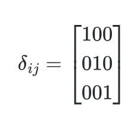
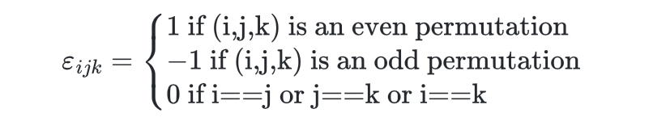
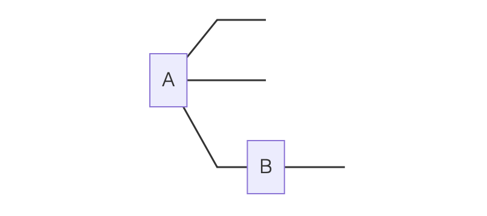
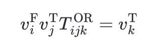
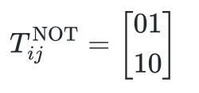
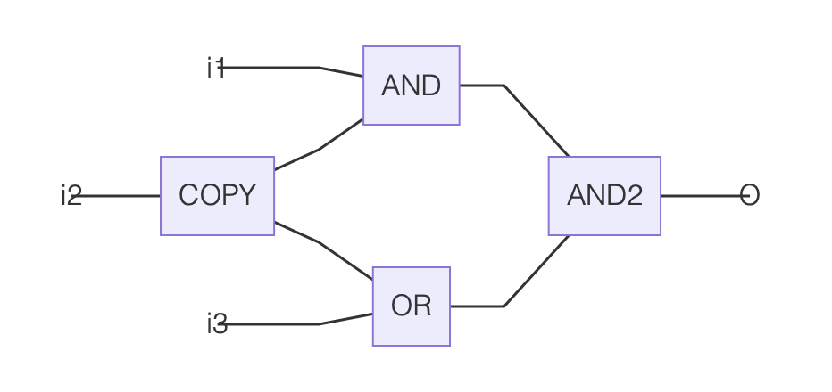
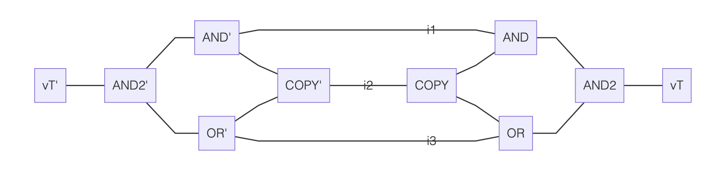
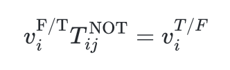

#SAT with Tensor Networks
Jun 17, 2022 09:21 · 700 words · 4 minute read
Cross-posted from LessWrong.
(Thanks to Mark Xu for comments on these notes.)
These are some notes on tensor networks, the mapping from boolean circuits to tensor networks, and how #SAT can be written as a tensor network contraction.
Definitions and Notation
What is a tensor?
A rank-$d$ tensor is an array of numbers with $d$ integer indices, e.g. $T_{ijk}$ is a rank-3 tensor. The range of each index is called its bond dimension. So for instance the Kronecker delta tensor used in physics is given by
and is a tensor with two indices, each of bond dimension $3$. Meanwhile the Levi-Civita symbol
is a tensor with three indices each of dimension $3$.
What is a tensor contraction?
A contraction is a specification of dot products to perform between tensors. For instance
$$ Q_{ikl}=\sum_{j} A_{ijk} B_{jl} $$
says to form the tensor $Q$ by contracting $A$ with $B$ along the second index of $A$ and the first index of $B$.
A tensor can also be contracted with itself, forming a trace. For instance
$$ A_{i} = \sum_j B_{ijj} $$
says that we trace over the second and third indices of $B$ to form $A$.
Often times the summation is written just with indices and no $\sum$ symbol using Einstein summation notation. In this notation, indices are summed over if they appear in an expression exactly twice. This notation is unambiguous because contraction is only defined over pairs of indices.
What is a tensor network?
A tensor network is a specification of which contractions are desired between one or more tensors. They are often drawn diagrammatically in penrose notation as
Here $A$ has three indices, $ijk$, two of which are free (meaning they are not involved in any contraction) and one of which is linked to an index of $B$, which itself has a further free index $l$.
Representing Boolean Circuits
A boolean circuit with inputs $i_1…i_n$ can be written as a tensor network as follows. For further references see here.
First, each input is mapped from False/True to a vector which is either $v^{\rm F} = (1,0)$ or $v^{\rm T} = (0,1)$. These vectors can be contracted with tensors representing the various boolean gates. For instance
$$ T^{\mathrm{OR}}_{ijk} = \begin{cases} 1 \text{ if (i=1 or j=1) and k=1}\ 0 \text{ otherwise}\end{cases} $$
This has the property that
That is, $T^{\rm OR}$ implements an OR gate. An AND gate can be similarly constructed:
$$ T^{\rm AND}_{ijk} = \begin{cases} 1 \text{ if (i=1 and j=1) and k=1}\ 0 \text{ otherwise}\end{cases} $$
Note that an AND tensor can also be used to copy a wire, because
$$ v_i^{\rm F/T} T_{ijk}^{\rm AND} = v_{j}^{\rm F/T}v_{k}^{\rm F/T} $$
Finally, NOT gates are just given by
so that
In this way, we can construct a tensor network which, when contracted against the vectors representing its inputs, results in a vector representing its output.
#SAT with Tensor Networks
#SAT is the problem of counting the number of instances of a boolean circuit which output True. We can represent this problem in a tensor network as follows:
(1) Map the boolean circuit to a tensor network with input indices $i_1…i_n$ and output index $o$. The result might look like
If we contract some combination of $v^{\rm F/T}$ against the input indices $i_1…i_4$ then the resulting tensor network will equal either $v^{\rm T}$ (if the boolean circuit would have produced True with that input) or $v^{F}$ (otherwise).
(2) Contract an instance of $v^{\rm T}$ against $o$. Because $v^{\rm F}$ is orthogonal to $v^{\rm T}$, and both have unit norm, the resulting tensor network now produces the scalar 1 if the inputs are set to a combination of $v^{\rm F/T}$ so that $o=v^{\rm T}$ and the scalar 0 otherwise.
(3) Make a copy of this tensor network, with input indices $i_1'…i_n'$.
(4) Construct a new tensor network which specifies the contraction of the network and its copy, linking each $i_j$ with the corresponding $i_j'$. This might look as follows:
This network has no free indices and so produces a scalar when contracted. The contraction can be written as a sum over all possible values of the indices $i_1…i_n$, so that scalar equals the number of input instances satisfying the boolean circuit.